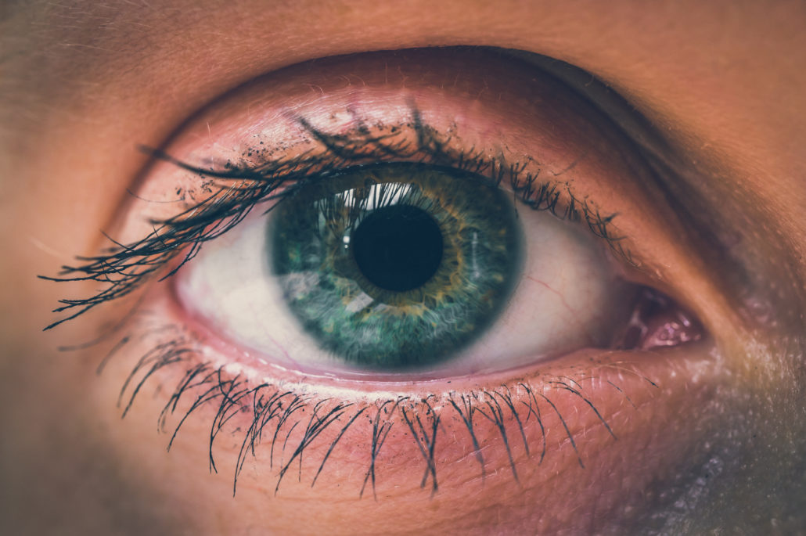

ေလဆာျဖင့္ အျမင္ပါ၀ါေလ်ာ့နည္းေအာင္ ကုသျခင္း- LASIK Eye Surgery

LASIK Eye Surgery ဆိုတာ မ်က္လံုးအျမင္အာရံုခ်ဳိ႕ယြင္းခ်က္ေတြ ျဖစ္တဲ့ အနီးမႈန္တာ ၊ အေ၀းမႈန္တာ အစရွိတာေတြကို ေလဆာနဲ ့ ကုသတာ နည္းပညာကို ေခၚတာ ျဖစ္ပါတယ္။
မ်က္လံုးရဲ႕ အာရံုေၾကာကို မွန္မွန္ကန္ကန္ ရရွိဖို႔အတြက္ ေလဆာေရာင္ျခည္ အသံုးျပဳၿပီး မ်က္လံုးသားကို ျပန္လည္ ျပဳျပင္ေပးတာ ျဖစ္ပါတယ္။
အားသာခ်က္မ်ား
- အျမင္အာရံု ျပန္လည္ေကာင္းမြန္လာတာက အဓိက အားသာခ်က္ျဖစ္ပါတယ္။ အျမင္အာရံုကို ၉၆ ရာခိုင္ႏႈန္း ျပန္လည္ ေကာင္းမြန္ေစပါတယ္။
- နာက်င္မႈ အနည္းငယ္သာ ခံစားရေစပါတယ္။
- ကုသမႈၿပီးတဲ့အခါ ေနာက္တစ္ရက္မွာပဲ ပံုမွန္အျမင္ရေစႏိုင္ပါတယ္။
- ခြဲစိပ္ၿပီး ကုသတာမ်ဳိး မဟုတ္တာေၾကာင့္ ခ်ဳပ္တဲ့ ဒဏ္ရာ မျဖစ္ေစပါဘူး။
- ကုသၿပီး နွစ္ေပါင္းမ်ားစြာ ၾကာခဲ့လို႔ အျမင္အာရံုေတြ ျပန္ေ၀၀ါးခဲ့ရင္ ေတာင္ အလြယ္တကူ ျပန္လည္ ကုသႏိုင္ပါတယ္။
- မ်က္မွန္တပ္ရတာကို ေလ်ာ့နည္းေစပါတယ္။
အားနည္းခ်က္မ်ား
ဒီကုသမႈဟာ အနည္းငယ္ ရွဳပ္ေထြးတဲ့ ျဖစ္စဥ္တစ္ခုျဖစ္တာေၾကာင့္ တစ္ခါတေလ အျမင္အာရံုကို ထိခိုက္ေစတာမ်ဳိး ျဖစ္တတ္ပါတယ္။
ေဘးထြက္ဆိုးက်ဳိးမ်ား
- မ်က္ခမ္းစပ္ျခင္း
- အျမင္အာရံုမွာ အ၀န္းအ၀ိုင္းေတြ ျမင္ရျခင္း
- ညဘက္ ကားေမာင္းရခက္ခဲျခင္း
- မ်က္စိ ေျခာက္ေသြ႔ျခင္း
- အျမင္ ပံုသ႑န္ မမွန္ျခင္းေတြ ျဖစ္တတ္ပါတယ္။
လိုက္နာသင့္သည္မ်ား
ကုသမႈ မတိုင္ခင္ ကြ်မ္းက်င္တဲ့ ဆရာ၀န္နဲ ့ ေသေသခ်ာခ်ာ ေဆြးေႏြးတုိင္ပင္သင့္ပါတယ္။ မ်က္လံုးကို စမ္းသပ္စစ္ေဆးမႈေတြ အရင္လုပ္ၿပီး မ်က္လံုးအေျခအေန အေျဖေတြ ေကာင္းတယ္ဆိုရင္ေတာ့ ဒီကုထံုးကို စတင္ႏိုင္မွာပါ။
မ်က္ကပ္မွန္တပ္ေနတဲ့ လူဆိုရင္ေတာ့ ကုသမႈ မတိုင္ခင္ သံုးရက္ကေန သံုး ပတ္အတြင္း မ်က္ကပ္မွန္ အသံုး မျပဳသင့္ပါဘူး။
ကုသမႈ မျပဳခင္ အစာေပ်ာ့ေပ်ာ့သာ စားရပါမယ္။ မိက္ကပ္ လိမ္းတာ၊ ဆံညွပ္ တပ္တာေတြ ေရွာင္သင့္ပါတယ္။
ကုသေနစဥ္အတြင္းမွာ ထံုေဆးေပးထားတတ္ပါတယ္ ။ ၁၀ မိနစ္ခန္ ့ ၾကာျမင့္မွာျဖစ္ၿပီး လိုအပ္မယ္ဆိုရင္ ေမ့ေဆး သံုးနိုင္ပါတယ္ ။ ကုသမႈအၿပီး အိမ္ျပန္တဲ့အခါ ကိုယ္တိုင္ ကားေမာင္တာမ်ဳိး ေရွာင္ပါ။
ကုသမႈအၿပီး ဘာျဖစ္တတ္လဲ
မ်က္လံုးေျခာက္ၿပီး ပိုး၀င္ႏိုင္ပါတယ္။
ဒါေပမယ့္္ ပိုးသတ္ေဆးပါတဲ့ မ်က္စဥ္းေတြကို ဆရာ၀န္က ေပးပါလိမ့္မယ္။ ဆရာ၀န္ေပးတဲ့ မ်က္စဥ္းေဆးကိုသာ အသံုးျပဳရမွာ ျဖစ္ပါတယ္။
ကုသတဲ့ေန ့မွာေတာ့ အျမင္အာရံု ၾကည္ၾကည္လင္လင္ မရွိတာမ်ဳိး ျဖစ္တတ္ပါတယ္ ။ ဒါေပမယ့္ ေနာက္တစ္ရက္ဆိုရင္ေတာ့ ပိုၾကည္သြားမွာပါ။
ဆရာ၀န္ျပန္ခ်ိန္းတဲ့ ေနာက္ထပ္ ရက္ခ်ိန္းေတြကိုေတာ့ ျပသဖို ့မေမ့ပါနဲ႔။
* က်န္းမာၿပီး ၾကည္လင္ေတာက္ပတဲ့ အျမင္အာရံုေတြကို ပိုင္ဆိုင္ႏိုင္ၾကပါေစ။ *